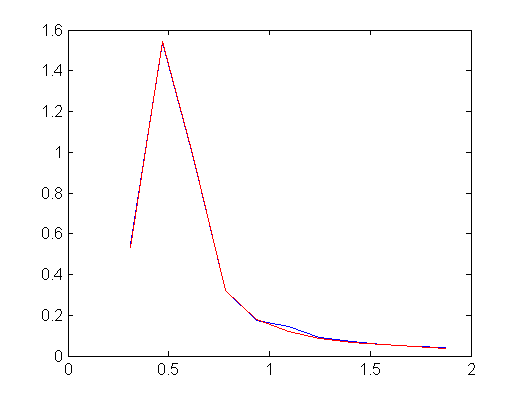
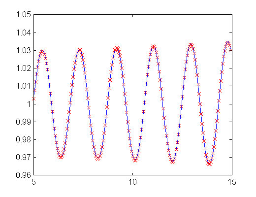
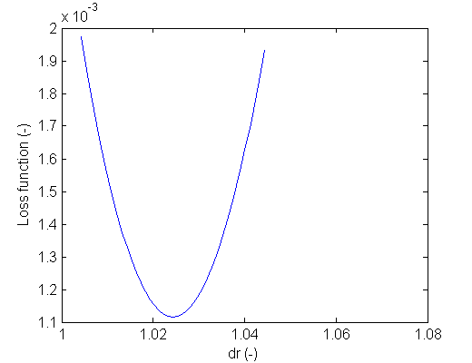
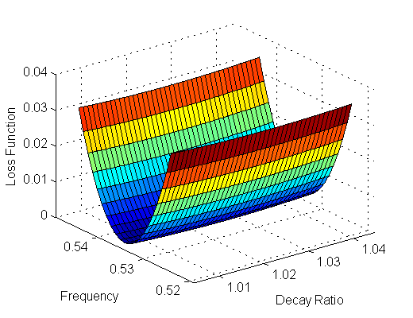

Exercise on fftfit
Contents
Run fftfit with r1_cy14_09_glbl.cms as input argument
fftfit ../r1_cy14_09_glbl.cms
Time window 5.00 15.00 Method dr freq S3K FFT 1.0240 0.5340 Matlab FFT 1.0243 0.5340 get_phasor 1.0298 0.5340 Difference vs S3K (%) Matlab FFT 0.029 -0.009 get_phasor 0.565 -0.007   